In this assignment, I implemented several core mesh editing operations using the half-edge mesh data structure. The main operations included edge flipping, edge splitting, and Loop subdivision for mesh upsampling. These operations allowed me to modify the connectivity of a mesh and refine it into a smoother, higher-resolution version.
For edge flipping, I updated the connectivity of two adjacent triangles by changing which vertices the shared edge connects. This required carefully reassigning all the halfedge pointers (next, twin, vertex, edge, and face) so that the mesh remained valid. For edge splitting, I inserted a new vertex at the midpoint of an edge and created new edges and faces to properly subdivide the surrounding triangles.
After implementing these basic operations, I used them to implement Loop subdivision. Loop subdivision repeatedly refines a mesh by splitting edges, flipping certain edges, and updating vertex positions using weighted averages of neighboring vertices. Applying this algorithm several times produces a smoother surface that approximates the original mesh.
One interesting thing I learned is how complex mesh connectivity actually is. Even simple operations like flipping or splitting an edge require updating many pointers, and missing even one connection can break the mesh. Another interesting insight is how mesh connectivity affects geometry — for example, the triangulation of a cube can cause asymmetry after subdivision, even though the cube itself is symmetric. This made it clear that both geometry and connectivity play important roles in how subdivision algorithms behave.
De Casteljau's algorithm finds a point on a Bezier curve by repeatedly interpolating between neighboring control points. Starting with the original control points, we compute new points between every pair using the parameter t. Each new point lies somewhere between the two original points depending on the value of t. After doing this once, we get a new set of points. We repeat the same process on the new points until only one point remains — that final point is the point on the Bezier curve at the chosen value of t.
In my implementation, I completed
BezierCurve::evaluateStep() in
student_code.cpp. This function takes the current list of
control points and performs one step of interpolation. I loop through
each pair of adjacent points, compute the interpolated point using the
parameter t, and store the results in a new vector. The program
repeatedly calls this function until the final point on the curve is
produced.
I created my own curve3.bzc file with 6 control points:
6 0.1 0.2 0.2 0.8 0.4 0.3 0.6 0.7 0.8 0.4 0.9 0.6
These control points form the initial control polygon. The white squares represent the control points, and the white lines show the control polygon connecting them.
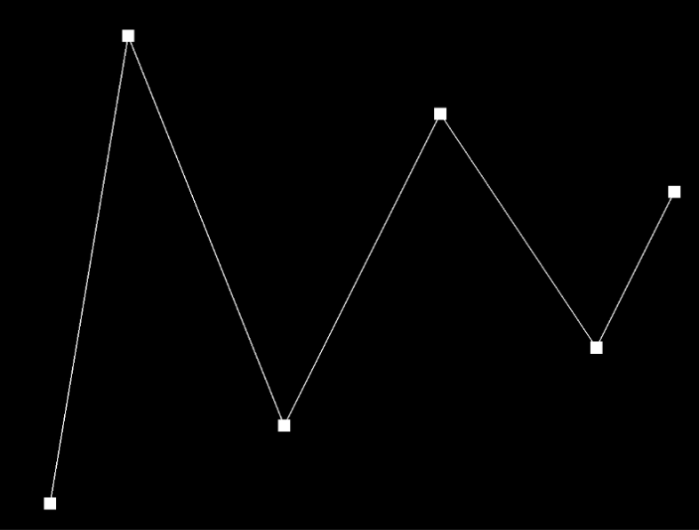
Level 0: Original control polygon
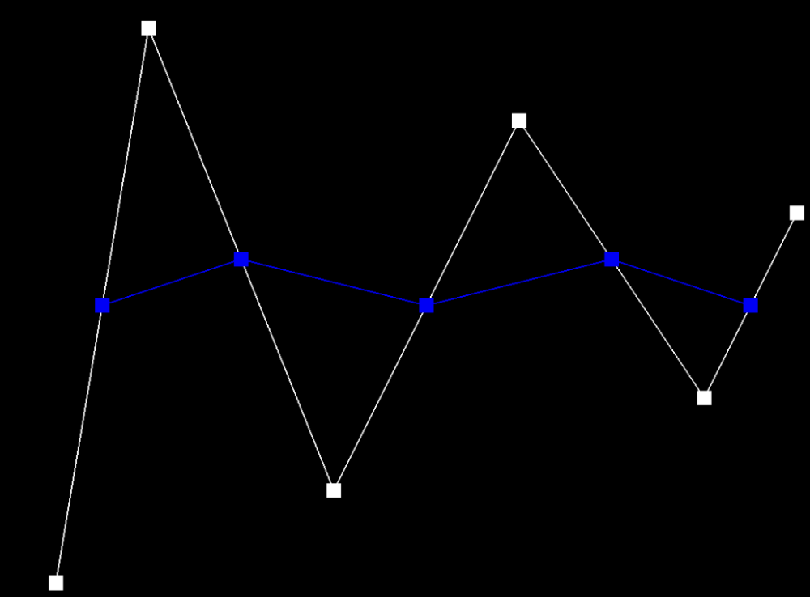
Level 1: Five intermediate points
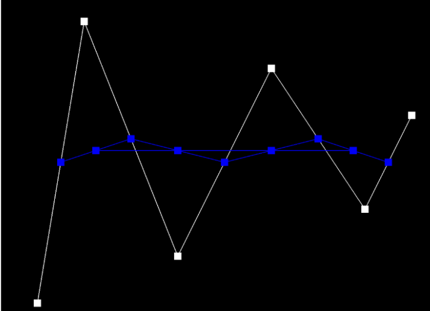
Level 2: Four interpolated points
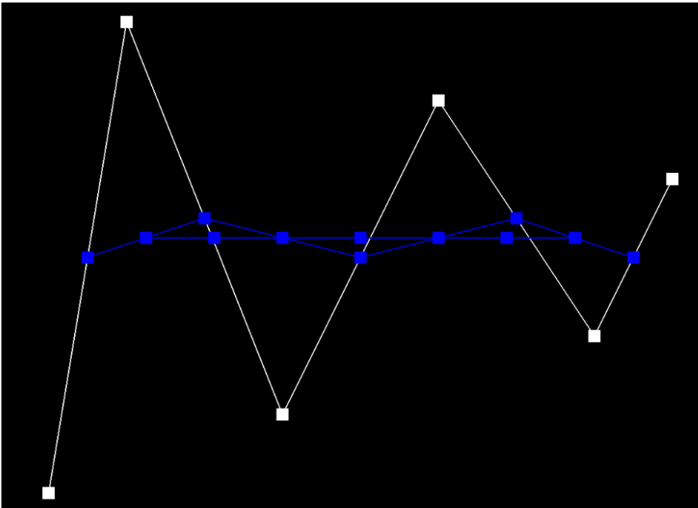
Level 3: Three interpolated points
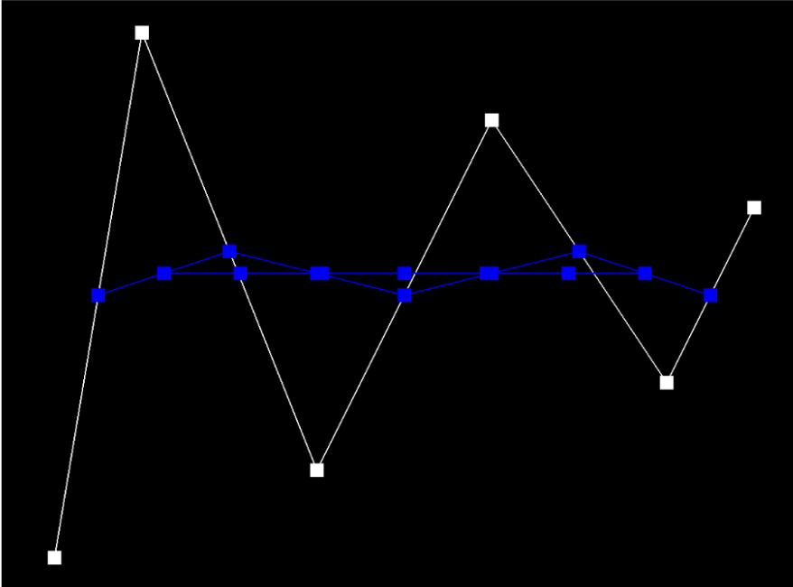
Level 4: Two interpolated points
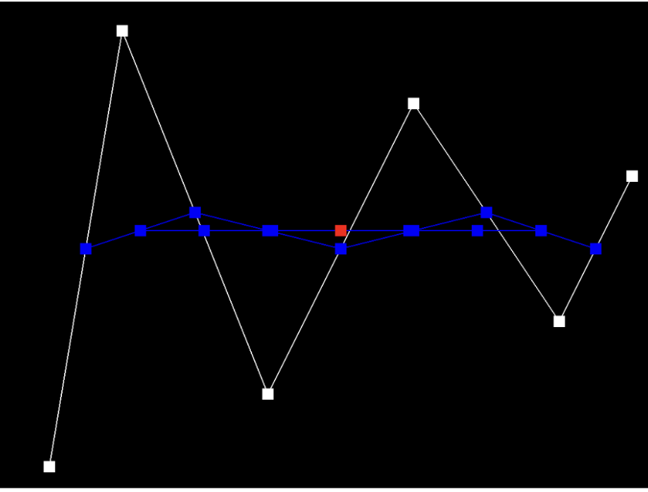
Level 5: Single final point (red)
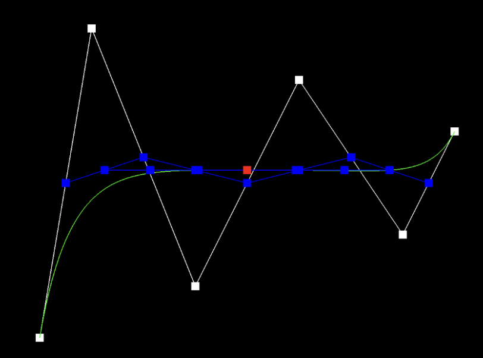
Level 6: Completed Bezier curve (green)
To generate a slightly different curve, I dragged some of the original control points to new positions using the mouse, and also changed the parameter t by scrolling. Changing t moves the evaluated point along the curve. The screenshot shows how both moving the control points and changing t affects the shape of the curve and the position of the evaluated point.
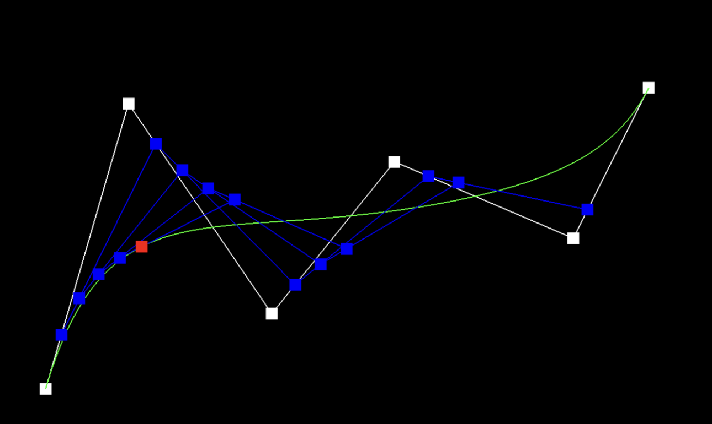
Modified curve with adjusted control points and parameter t
De Casteljau's algorithm for Bezier surfaces works by applying the same interpolation idea used for Bezier curves, but in two directions. Instead of a single list of control points, a Bezier surface has a grid of control points. First, we treat each row of control points as a Bezier curve and evaluate them using the parameter u, which gives us one point per row. These resulting points form another Bezier curve in the other direction. Then we apply the same de Casteljau process again using the parameter v to evaluate that curve and get the final point on the surface.
In my implementation, I reused the same idea from Part 1. I wrote
evaluateStep() to perform one interpolation step between
neighboring 3D control points. Then evaluate1D() repeatedly
calls that function until only one point remains. Finally, in
evaluate(), I first evaluate each row of the control point
grid using u, collect those points into a vector, and then
evaluate that vector using v to get the final point on the
Bezier surface.
The screenshot shows the Bezier surface generated from
bez/teapot.bez. The teapot is constructed from multiple
Bezier patches and is evaluated using the separable de Casteljau
algorithm. The rendered result appears as a smooth surface, confirming
that the Bezier surface evaluation is working correctly.
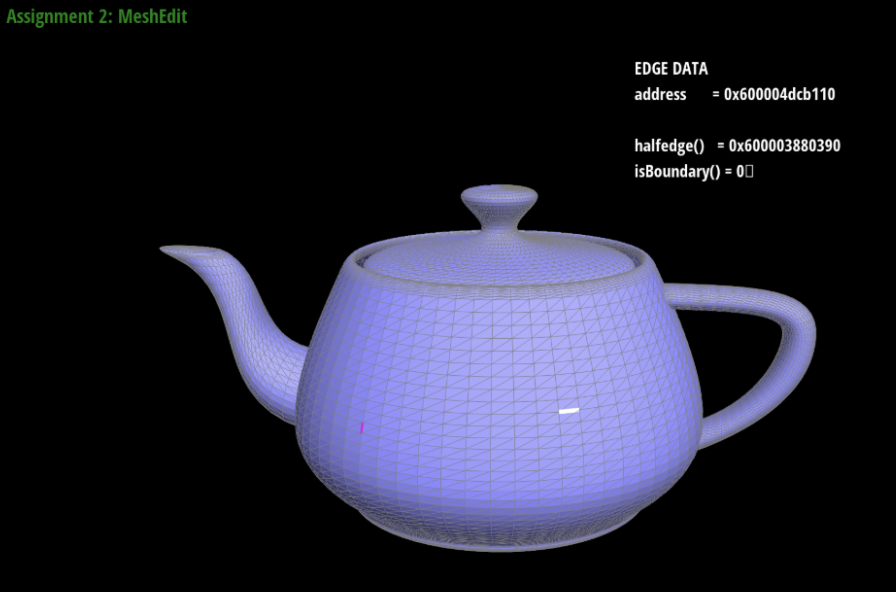
bez/teapot.bez rendered using separable de Casteljau evaluation
To compute the area-weighted normal at a vertex, I iterated through all
triangles neighboring that vertex using the half-edge structure.
Starting from one outgoing half-edge, I repeatedly moved around the
vertex using h = h->twin()->next() until I returned to the
starting half-edge. For each triangle, I got its three vertex positions
and formed two edge vectors from the current vertex to the other two
vertices. I then took the cross product of those two edge vectors to
compute the face normal. Since the magnitude of the cross product is
proportional to the area of the triangle, this automatically gives an
area-weighted contribution. I summed these normals over all neighboring
faces and then normalized the final result to get the unit vertex
normal.
After implementing Vertex::normal(), I ran
./meshedit ../dae/teapot.dae and pressed Q to toggle the
area-weighted vertex normals. The teapot shading became smooth (Phong)
instead of flat, confirming that the vertex normals were computed
correctly.
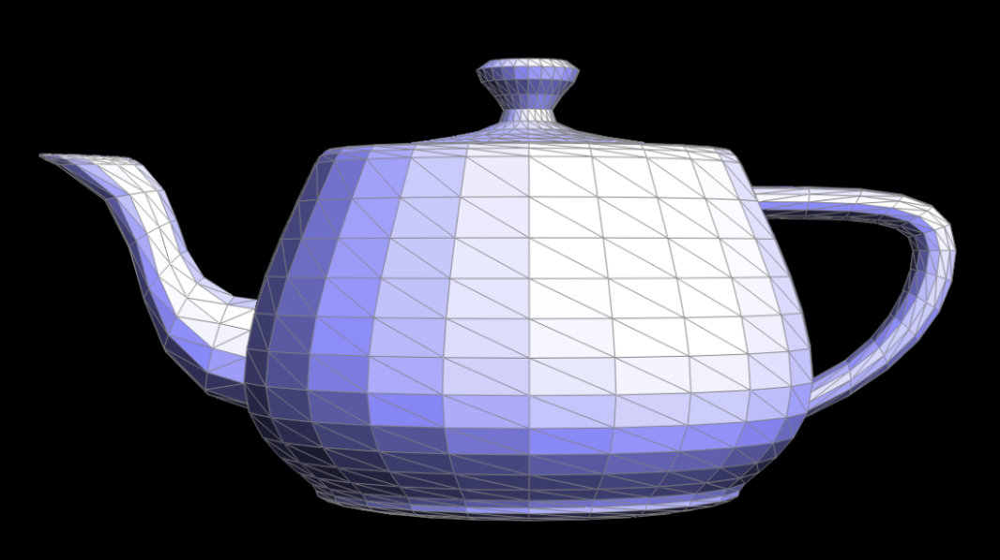
Flat shading (without vertex normals)
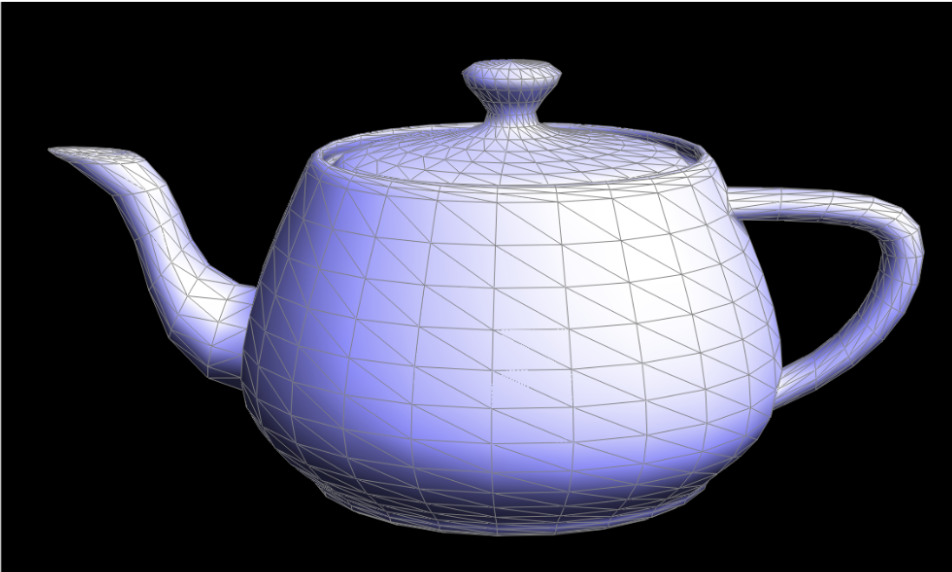
Phong shading (with area-weighted vertex normals)
To implement edge flip, I first labeled the two triangles around the selected edge and identified all of the related halfedges, vertices, edges, and faces. Since an edge flip does not create or delete any mesh elements, I kept the same set of halfedges, edges, vertices, and faces and only reassigned their pointers. The main change was replacing the shared edge between the two original triangles with the new diagonal connecting the opposite two vertices.
I first checked whether the selected edge was on the boundary. If either neighboring face was a boundary face, I immediately returned without flipping. Otherwise, I collected all six halfedges involved in the two triangles, along with their neighboring vertices, edges, and faces, then carefully reassigned all pointer values so that the two triangles matched the flipped configuration.
A useful debugging trick was to draw the local configuration on paper and label every halfedge before and after the flip. Another thing that helped was explicitly resetting all pointers for the affected local elements — even if some of them did not change — because it reduced the chance of missing one pointer and creating a broken mesh. At first, my implementation created holes in the mesh due to incorrect halfedge pointers. After fixing the pointer assignments and verifying the vertex and face references were updated correctly, the mesh remained closed even after flipping many edges.
After flipping some edges on the teapot, the connectivity of the triangles changed even though the overall shape of the mesh stayed the same. Edge flipping replaces the diagonal of two adjacent triangles with the opposite diagonal. The geometry of the teapot itself does not change, but the triangulation becomes rearranged, which can sometimes improve the quality or regularity of the mesh.
Teapot before edge flips
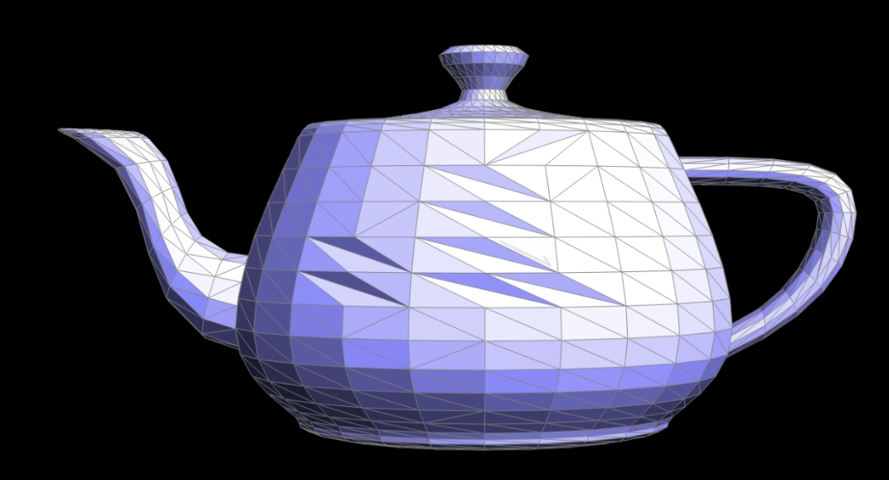
Teapot after edge flips
To implement edge split, I took the selected edge and looked at the two
triangles adjacent to it. I created a new vertex at the midpoint of the
original edge and rewired the local half-edge connectivity so that the
two old triangles became four smaller triangles. This required creating
new mesh elements (midpoint vertex, new edges, new faces, and new
halfedges) and then carefully updating all of their next,
twin, vertex, edge, and
face pointers. I also updated the representative halfedge
pointers for the affected vertices, faces, and edges.
One thing that helped a lot was drawing the local configuration before and after the split and labeling all the halfedges, vertices, edges, and faces. I also explicitly reset all local pointers even if some technically did not change, and tested the implementation by repeatedly splitting and flipping nearby edges to make sure the mesh stayed connected and valid.
After performing edge splits on the mesh, new vertices were inserted at the midpoints of the selected edges. This increased the number of triangles and made the surface more finely subdivided. Each edge split divides the two adjacent triangles into smaller triangles, increasing mesh resolution while preserving the overall shape.
Mesh before edge splits
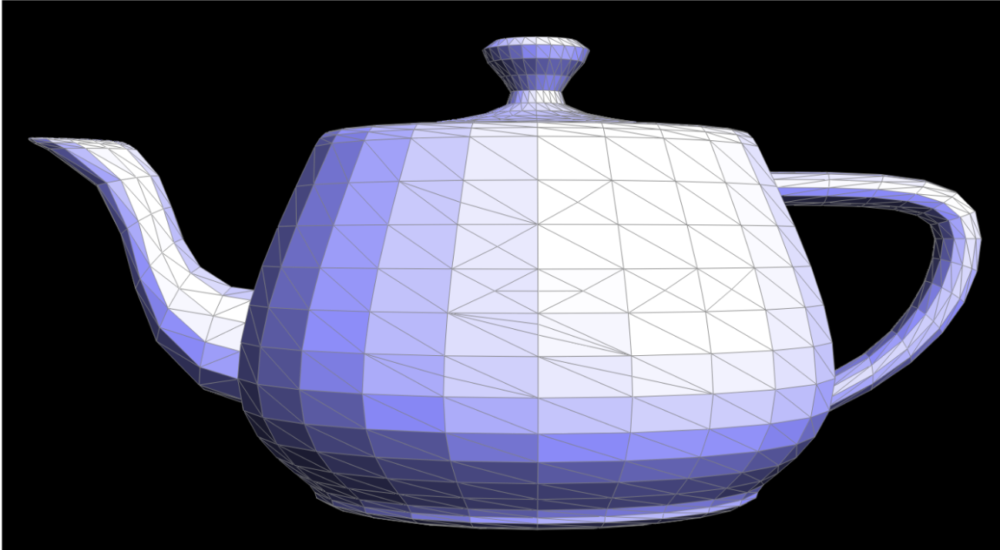
Mesh after edge splits
After applying a combination of edge splits and edge flips, both the resolution and the connectivity of the mesh changed. Edge splits increased the number of vertices and triangles, making the mesh denser. Edge flips then rearranged the triangulation locally by changing which vertices certain edges connect. This demonstrates how edge splits modify mesh resolution while edge flips modify mesh connectivity.
Mesh before edge splits and flips
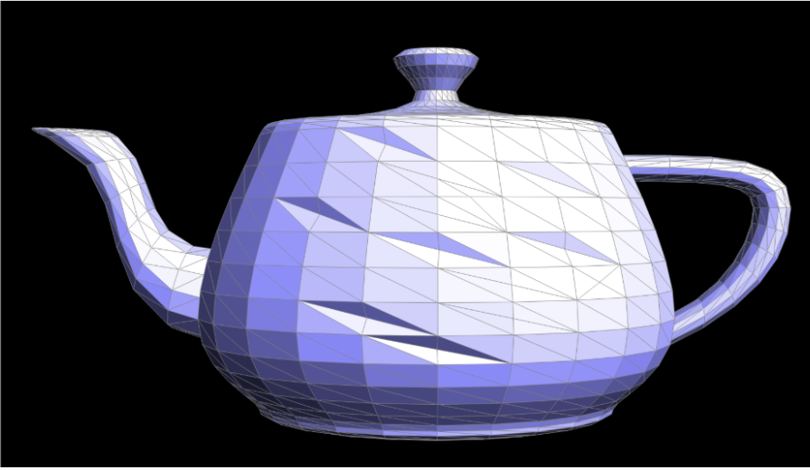
Mesh after edge splits and flips
The hardest part was that even if the code compiled, the mesh could still break in subtle ways if just one pointer was wrong. Splitting an edge would make parts of the mesh disappear or create broken local connectivity. What helped most was slowing down and focusing only on the small local neighborhood around the edge being split, drawing the two original triangles and the four post-split triangles, and matching each pointer assignment to the diagram. Testing by alternating between splitting and flipping nearby edges made pointer mistakes show up quickly.
I implemented loop subdivision in three main steps. First, I computed
the updated positions for all original vertices and stored them in
Vertex::newPosition without changing the actual vertex
positions yet. I also computed the midpoint positions for all original
edges using the Loop subdivision rule and stored them in
Edge::newPosition. Doing this first was important because
all weighting formulas are supposed to use the original mesh, not a
partially updated one.
Next, I split every original edge in the mesh. After each split, I
assigned the new midpoint vertex its precomputed edge position. Then I
iterated through the edges again and flipped any new edge that connected
one old vertex and one new vertex. Finally, after the connectivity was
updated, I copied all stored newPosition values into the
actual vertex positions.
The main debugging challenge was that Part 6 depends heavily on Parts 4
and 5 being correct. One key trick was making sure I only split the
original edges by first storing them in a separate list before modifying
the mesh, which avoided accidentally splitting newly created edges. I
also relied on isNew flags to carefully distinguish between
old and new vertices and edges.
After each iteration of loop subdivision, the mesh becomes smoother and more rounded. At the beginning, the cube has sharp corners, flat faces, and hard edges. After one or two subdivision steps, those features start to soften noticeably. The corners move inward, the edges round off, and the overall shape starts looking more like a sphere than a cube.
Loop subdivision tends to smooth out sharp corners and edges because the algorithm repeatedly replaces each vertex position with a weighted average of its neighbors, pulling extreme features inward and spreading the surface out more evenly.
This effect can be reduced by pre-splitting edges near a sharp feature. Adding more supporting edges near a corner constrains how far the smoothing pulls the surface, helping preserve that feature longer through multiple subdivision steps.
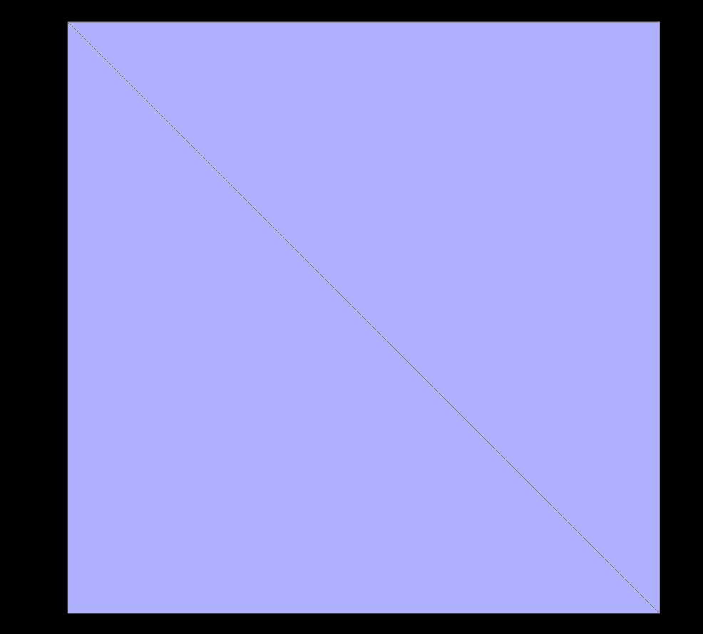
Cube: Level 0 (original)
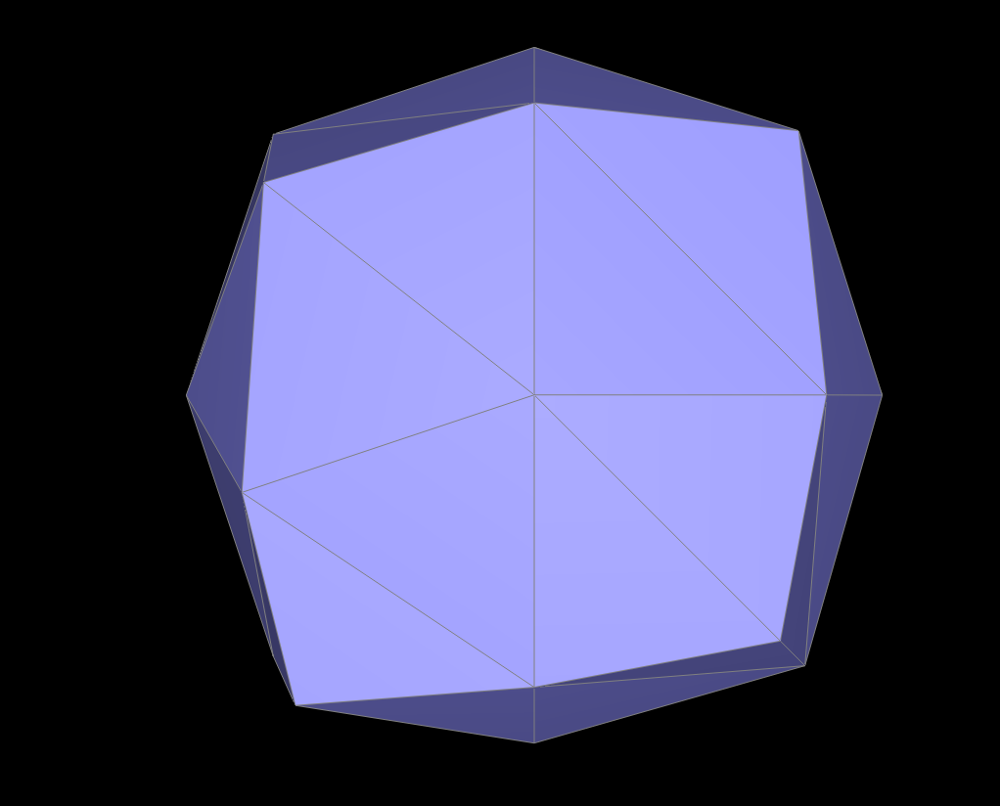
Cube: Level 1
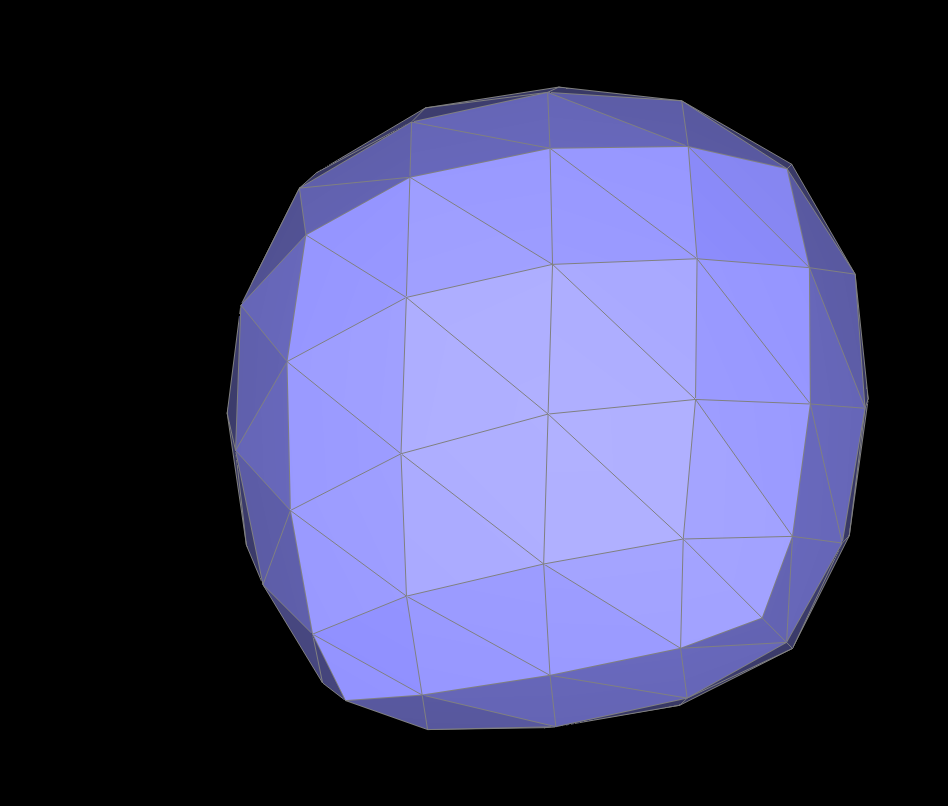
Cube: Level 2
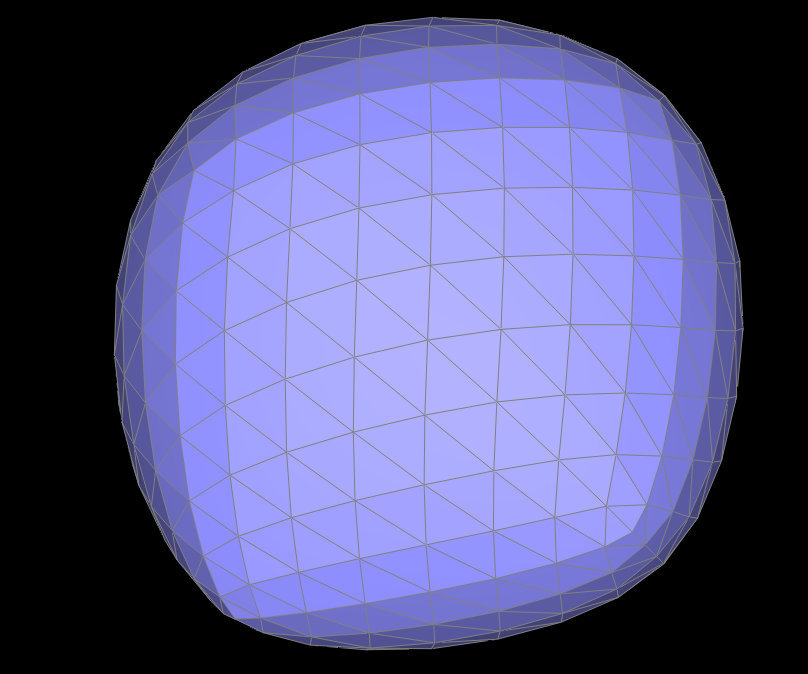
Cube: Level 3
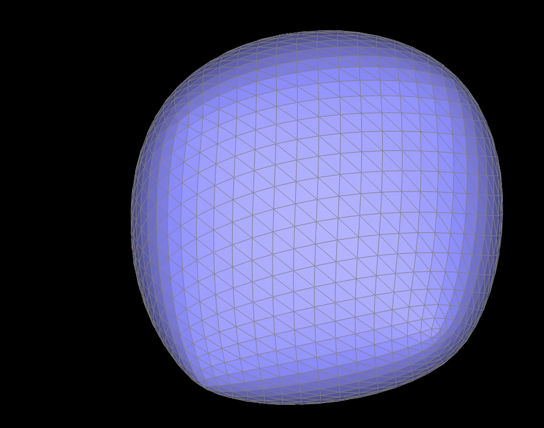
Cube: Level 4
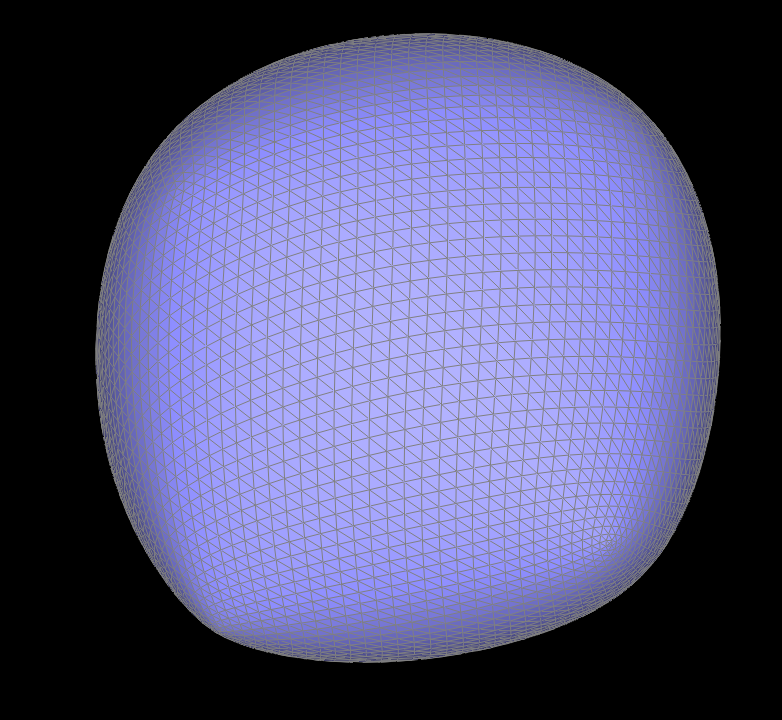
Cube: Level 5
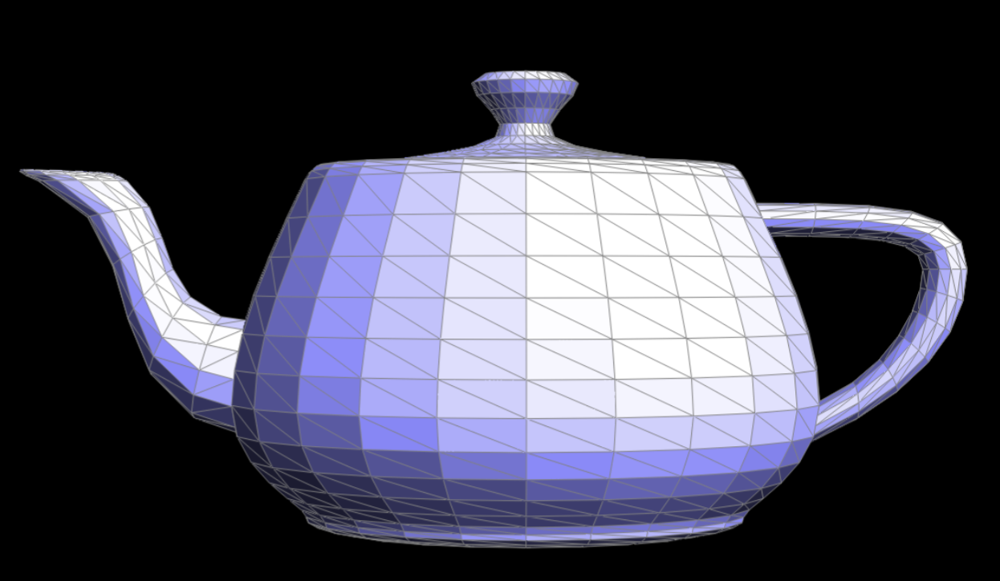
Teapot: Level 1
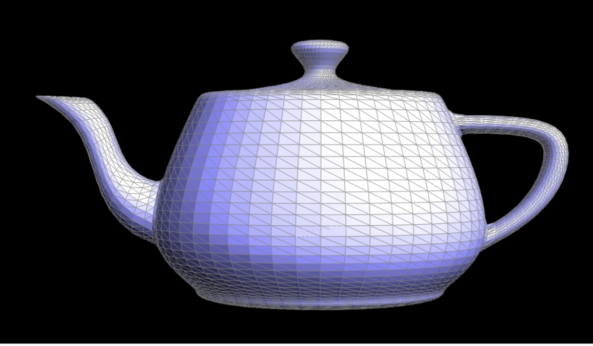
Teapot: Level 2
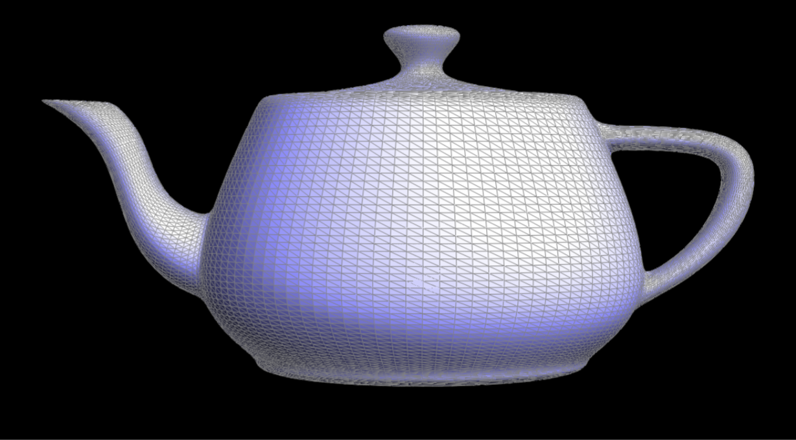
Teapot: Level 3
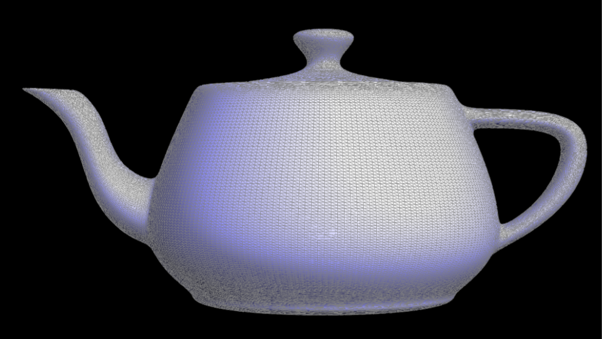
Teapot: Level 4
When I applied repeated loop subdivision to the original cube, the cube gradually became rounder but also developed a slight asymmetry. This happens because the original cube mesh is triangulated in a way that is not perfectly symmetric — the diagonal choices on the square faces introduce directional bias into the triangle connectivity. Since loop subdivision depends on local connectivity and weighted averaging, that connectivity bias gets propagated and amplified over multiple subdivision steps.
To reduce this effect, I pre-processed the cube using edge flips and edge splits to make the triangulation more balanced and symmetric before subdivision. The goal is to make the mesh connectivity match the geometric symmetry of the cube more closely. If opposite faces and neighboring regions are triangulated in a more consistent way, the subdivision weights are applied more uniformly, resulting in a more symmetric smoothed shape.
In other words, the asymmetry is not caused by the subdivision rule alone, but by the fact that the rule is being applied to a connectivity pattern that already has bias. Pre-processing improves that connectivity before the smoothing begins.
Pre-processed cube: Level 0
Pre-processed cube: Level 1
Pre-processed cube: Level 2
Pre-processed cube: Level 3
Pre-processed cube: Level 4
Pre-processed cube: Level 5